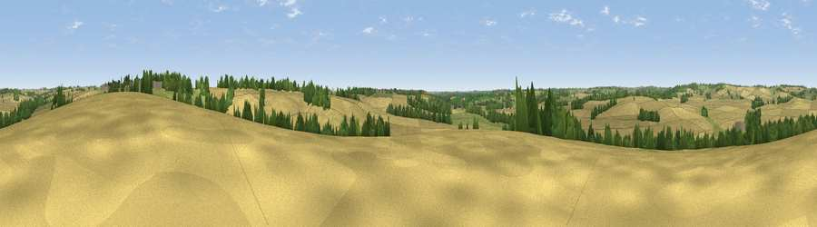

Viewpoint near Scaldwell
#41027 in England · top 84% of its area beats it · near ScaldwellThe view, rendered

A 360° render of this exact spot computed from the terrain model, tree cover and land cover — summer colours, afternoon light, calibrated against photographs of famous viewpoints. Real trees, hedges and buildings will differ in detail.
The panorama
Grey silhouette: terrain skyline in each direction (720 bearings, Earth curvature and refraction included). Dashed green: skyline with trees (+15 m) and buildings (+8 m) as obstacles. Blue strip: how far the ground is visible on each bearing.
Where the view opens
Wedge length = distance to the farthest visible ground on that bearing (vegetation-aware). Rings at 10, 25 and 50 km.
What fills the view
74% cropland · 17% grassland · 9% woodland ·
Angular shares of the visible panorama (visual magnitude), not map area. Landscape diversity 0.34 (0–1 Shannon).
Key numbers
More beautiful places nearby
The staircase of upgrades: each row has a higher view potential than everything closer. Driving times are estimates from straight-line distance, calibrated against real road routing — check an actual route before setting out.
| Place | Direction | Drive | Score |
|---|---|---|---|
| Viewpoint near Haselbech | NW · 3 km | ~8 min | 40.8 |
| Viewpoint near Haselbech | NW · 5 km | ~11 min | 47.1 |
| Viewpoint near Sibbertoft | NNW · 11 km | ~20 min | 48.8 |
| Viewpoint near Cold Ashby | WNW · 11 km | ~21 min | 61.7 |
| Viewpoint near Staverton | WSW · 23 km | ~38 min | 63.3 |
| Big Hill - Staverton Clump | WSW · 23 km | ~38 min | 68.4 |
| Viewpoint near Northend | WSW · 41 km | ~60 min | 69.7 |
| Viewpoint near Northend | WSW · 41 km | ~60 min | 70.3 |
52.35473, -0.90646 · source: screening · position refined by local search. Computed location — check access rights before visiting.